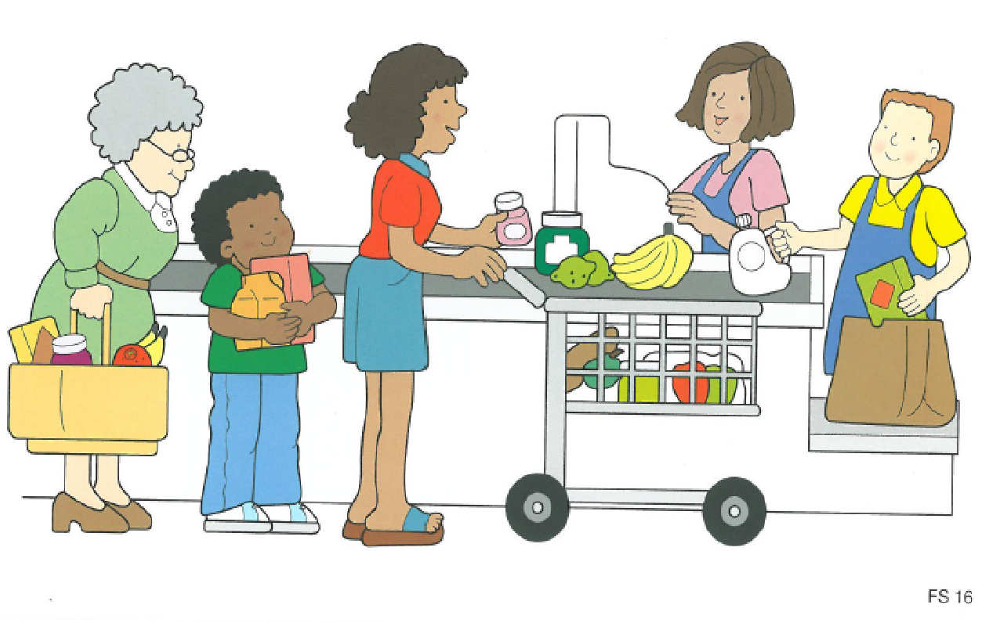

01 - Introduction¶
Introduction¶
Why SLTS need to know about linguistics¶
- Is a child who says Him go there language impaired?
- CELF Formulating Sentences - what kind of linguistic skills are being measured?
- 
- Diagnose language impairments
- Identify targets for therapy
- Devise new therapies
What is linguistics?¶
The study of language, consisting of 4 subdomains
- syntax: language structure
- semantics: linguistic meaning
- phonology: the sound system of language
- pragmatics: language in context
What is syntax?¶
- Syntax encompasses word order, and how different languages form different structures
- Example of different word orders in different languages:
- English Subject-Verb-Object, e.g. Tom watches TV
- Japanese SOV, e.g. Tom-san-wa Terebi-o Mimashita
- Examples of the way different languages form questions:
- English questions involve movement, e.g. What is he doing?_
- Japanese places 'ka' at the end
- Spanish merely uses intonation
What is semantics?¶
- The study of word and sentence meaning
- BIG QUESTIONS: How are word meanings represented / expressed? How are word meanings combined to form sentence meanings?
What is pragmatics¶
The study of language in context
A: Do you want to see Mission Impossible V? B: I don't like action movies.
Interpretation 'no thanks' is only derivable if sentence is produced in the appropriate context
What is phonology?¶
- Ask Ghada and Jalal!!
Crossing over¶
While it is tempting to think in neat subfields, many phenomena cross over
e.g. The meaning of verbs (semantics) determines the number of participants in a sentence, which in turn determines the structure (syntax).
- John [1] gave Mary [2] a book [3]
Because of these cross-over phenomena, linguists often talk about the 'interfaces' between the different subdomains, e.g. the syntax-semantic interface.
Subfields of linguistics¶
Theoretical linguistics: investigates the nature of linguistic knowledge. IMPORTANT QUESTIONS: Are we born with knowledge of language? How do we explain similarities and differences across languages?
Psycholinguistics: investigates how we comprehend and produce language. IMPORTANT QUESTIONS: Is the human mind similar to desktop computer? Does the language we speak affect the way we think?
Sociolinguistics: investigates how and why language varies across different social classes and groupings. E.g. William Labov's famous (1963) study of Martha's Vinyard. He studies centralisation of diphthongs (multi-sound vowels). He pioneered methods to elicit relevant words without using word lists. He found an association between self-identification as a native and use of centralisation. Centralisation increased in response to an influx of non-natives. This shows that the language we use "indexes" our social identity.
Discourse studies: How we use language to persuade / exert power relationships.
Approaches to language structure¶
Prescriptive grammars - how we SHOULD speak¶
Prescriptive judgements regarding language usage are periodically proposed by influential individuals. Key targets of prescriptive judgements are the double negative and use of innit as a tage question. Linguists would not regard either of these forms as "bad" English. The key thing is that they are (a) shared among a speech community (b) adequately convey a message, i.e. do not lead to ambiguity and misunderstanding.
(1) Double negative: I haven't got no money / I can't get no satisfaction
Acceptable in certain dialects (e.g. London English) and languages (e.g. Spanish). It does not cause confusion as many prescriptivists claim.
(2) Use of innit as a tag question
- It was a great meal, wasn't it / innit?
- You're Jack's nephew, aren't you / innit?
- They've been to Greece, haven't they / innit?
This simplifies tag questions, but why is that a bad thing? Many languages create tag questions using single morphemes, e.g. Bengali kanna.
(3) African-American Vernacular English:
- He be working Tuesdays (he is usually working on a Tuesday)
- He been got a job (he got a job a long time ago)
It grammaticalises concepts which are not grammaticalised in Standard English. Therefore it is RICHER (with regard to certain grammatical subsystems).
So how do prescriptive grammars arise? They reflect the dominant dialect in the country, which in turn is a consequence of which regions hold the most political and economic power. As Weinreich said 'A language is a dialect with an army and a navy'
Descriptive grammars - how we ACTUALLY speak¶
Geordie English: No plural suffix for nouns denoting a time period, e.g. I've been here three year.
Scottish English: Use of amn't I? as a tag question, e.g. I'm next in line, amn't I?
Mental grammars - the underlying system¶
Which of these sentences is correct?
- Me and Jack went to the shops
- I and Jack went to the shops
- Jack and me went to the shops
- Jack and I went to the shops
Now which is the way you actually say the sentence?
Note that there is a conflict between prescriptive and mental grammars. Individuals who allow prescriptive grammars to override mental grammars are guilty of 'hypercorrection'
Hypercorrection¶
This is a phenomena whereby we override our mental grammar, and instead adopt a prescriptive grammar. Our natural tendency is to say Me and Jack went to the shops. This is our mental grammar. However, in certain formal contexts, we may say Jack and I went to the shops, which is often prescribed at school.
Hypercorrection is interesting because it shows that prescriptive grammar has a lot of power over us.
A communicative view of language¶
Definition¶
(1) Language is primarily a form a communication and all linguistic 'rules' subserve this goal
(2) Linguistic 'rules' are established by speech communities
(3) A sentence is 'well-formed' if it reliably expresses the speaker's thoughts using forms which are 'conventionalised', i.e. shared by the speaker's speech community.
Relationship with SLT practice¶
When assessing children we should evaluate their language according to the norms of their speech community
For example, deviations from the target when scoring sentence repetition which are consistent with the speaker's dialect are not scored as an error.
"The Influence of Linguistic Bias Upon Speech-Language Pathologists’ Attitudes Toward Clinical Scenarios Involving Nonstandard Dialects of English", Easton and Verdon, 2020
- Therapists were given dialect-related clinical scenarios, and needed to make clinical judgements
- Length of experience was correlated with more careful clinical judgements
- Positive attitudes to dialect difference were correlated with more careful clinical judgements.
5-minute exercise¶
What is the grammatical word class (e.g. noun, verb, adjective etc.) of the italicised words in the following sentences:
- The raging river tore through the valley
- That film really sucks